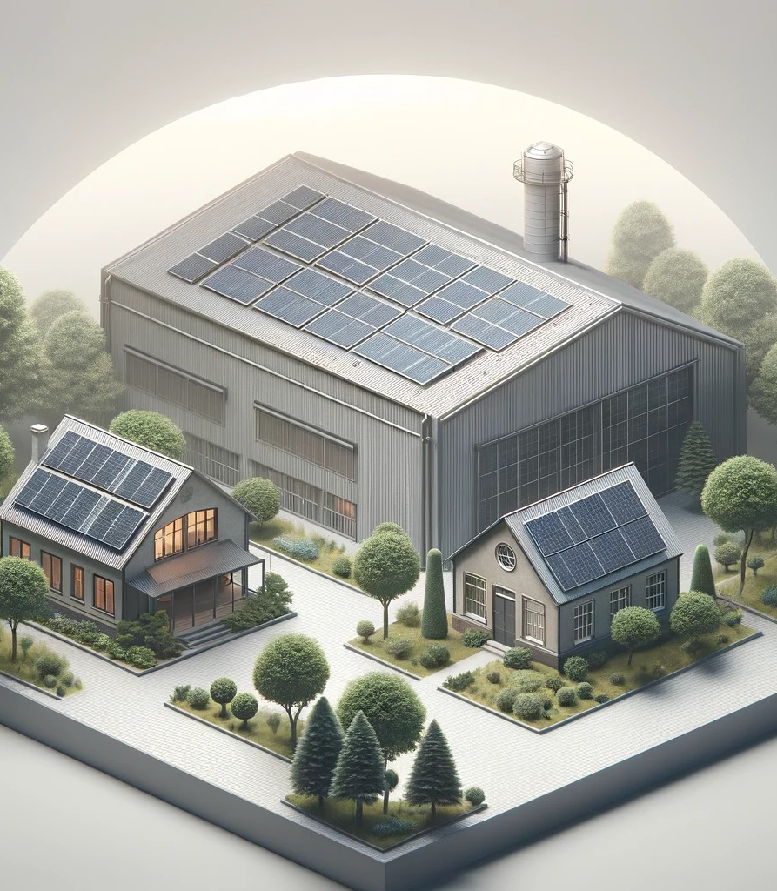

Solarne elektrane
Dobro došli u svijet održive energije!

Modernizirajte svoj dom ili
poslovni prostor
uz najnoviju tehnologiju solarnih panela. Osigurajte sebi pouzdanu i
ekološki prihvatljivu energiju koja
će znatno smanjiti vaše račune za
struju. Naše iskusno osoblje pružit će
vam kvalitetne usluge instalacije na principu
ključ u ruke, osiguravajući maksimalnu
učinkovitost vašeg solarnog sustava. Uđite u svijet obnovljive
energije s nama i uživajte u dugoročnim prednostima.
Solarne elektrane su:
održive.
učinkovite.
ekološke.
inovativne.
profitabilne.